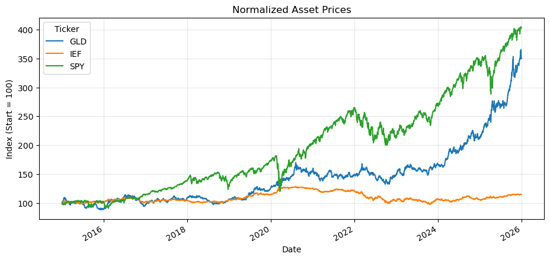
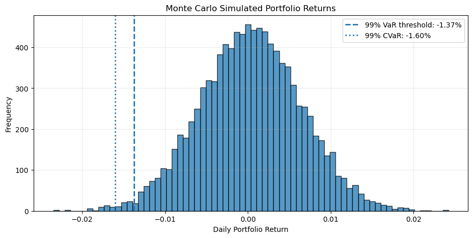
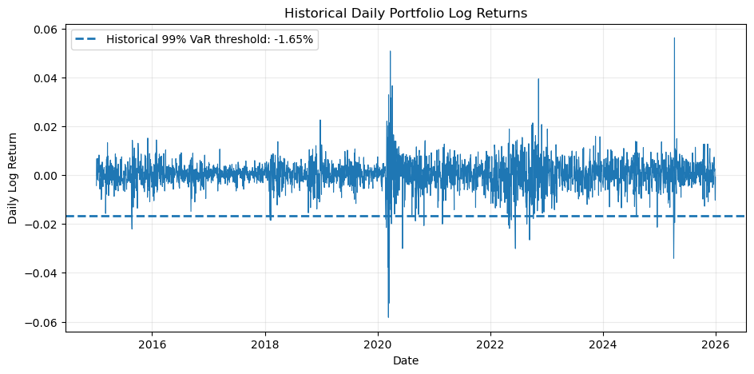

import numpy as np
import pandas as pd
import matplotlib.pyplot as plt
import yfinance as yf
pd.set_option("display.float_format", lambda x: f"{x:,.6f}")Monte Carlo Portfolio Stress Test
This project applies a Monte Carlo simulation to evaluate downside risk in a multi-asset portfolio. Historical market prices are used to construct portfolio returns, estimate historical VaR and CVaR, and generate simulated stress scenarios for potential extreme losses.
Portfolio
- SPY — Equities: 50%
- IEF — Bonds: 30%
- GLD — Gold: 20%
Methods
- Historical adjusted price data
- Log return calculation
- Portfolio aggregation
- Historical VaR and CVaR
- Monte Carlo simulation
- 99% stress-loss estimation
- Risk visualization
Tools
Python, yfinance, pandas, numpy, and matplotlib
1. Import libraries
The notebook uses yfinance for market data, pandas and numpy for calculations, and matplotlib for visualization.
2. Define portfolio and analysis settings
The weights sum to 100%. The dates can be changed if a different historical sample is preferred.
tickers = ["SPY", "IEF", "GLD"]
weights = pd.Series(
[0.50, 0.30, 0.20],
index=tickers,
name="Weight"
)
start_date = "2015-01-01"
end_date = "2025-12-31"
confidence_level = 0.99
simulations = 10_000
random_seed = 42
print("Portfolio weights:")
print(weights)
print("\nSum of weights:", weights.sum())Portfolio weights:
SPY 0.500000
IEF 0.300000
GLD 0.200000
Name: Weight, dtype: float64
Sum of weights: 1.03. Download historical prices
yfinance is used to download daily adjusted market prices. With auto_adjust=True, the downloaded OHLC data are adjusted for corporate actions.
data = yf.download(
tickers,
start=start_date,
end=end_date,
auto_adjust=True,
progress=False
)
prices = data["Close"].dropna()
print("Price data shape:", prices.shape)
display(prices.head())Price data shape: (2765, 3)| Ticker | GLD | IEF | SPY |
|---|---|---|---|
| Date | |||
| 2015-01-02 | 114.080002 | 82.037621 | 169.687790 |
| 2015-01-05 | 115.800003 | 82.538185 | 166.623383 |
| 2015-01-06 | 117.120003 | 83.092651 | 165.053879 |
| 2015-01-07 | 116.430000 | 83.077217 | 167.110733 |
| 2015-01-08 | 115.940002 | 82.738358 | 170.076065 |
4. Visualize normalized asset prices
Normalizing each series to 100 makes the relative historical performance of the three assets easier to compare.
normalized_prices = prices / prices.iloc[0] * 100
ax = normalized_prices.plot(figsize=(11, 5))
ax.set_title("Normalized Asset Prices")
ax.set_xlabel("Date")
ax.set_ylabel("Index (Start = 100)")
ax.grid(alpha=0.3)
plt.show()
5. Calculate daily log returns
For each asset:
[ r_t = () ]
Log returns are then aggregated using the portfolio weights.
log_returns = np.log(prices / prices.shift(1)).dropna()
portfolio_returns = log_returns.dot(weights)
portfolio_returns.name = "Portfolio Return"
display(log_returns.head())
display(portfolio_returns.head())| Ticker | GLD | IEF | SPY |
|---|---|---|---|
| Date | |||
| 2015-01-05 | 0.014965 | 0.006083 | -0.018224 |
| 2015-01-06 | 0.011334 | 0.006695 | -0.009464 |
| 2015-01-07 | -0.005909 | -0.000186 | 0.012385 |
| 2015-01-08 | -0.004217 | -0.004087 | 0.017589 |
| 2015-01-09 | 0.011321 | 0.004921 | -0.008046 |
Date
2015-01-05 -0.004294
2015-01-06 -0.000457
2015-01-07 0.004955
2015-01-08 0.006725
2015-01-09 -0.000282
Name: Portfolio Return, dtype: float646. Portfolio return summary
The following statistics summarize the historical daily return distribution. Annualized return and volatility use 252 trading days per year.
mean_daily = portfolio_returns.mean()
std_daily = portfolio_returns.std()
annualized_return = mean_daily * 252
annualized_volatility = std_daily * np.sqrt(252)
summary = pd.Series({
"Mean Daily Return": mean_daily,
"Daily Volatility": std_daily,
"Annualized Return": annualized_return,
"Annualized Volatility": annualized_volatility,
"Minimum Daily Return": portfolio_returns.min(),
"Maximum Daily Return": portfolio_returns.max()
})
display(summary.to_frame("Value"))
print(f"Annualized return: {annualized_return:.2%}")
print(f"Annualized volatility: {annualized_volatility:.2%}")| Value | |
|---|---|
| Mean Daily Return | 0.000358 |
| Daily Volatility | 0.006071 |
| Annualized Return | 0.090142 |
| Annualized Volatility | 0.096381 |
| Minimum Daily Return | -0.058273 |
| Maximum Daily Return | 0.056247 |
Annualized return: 9.01%
Annualized volatility: 9.64%7. Historical VaR and CVaR at 99%
- VaR (99%) estimates the loss threshold exceeded in approximately the worst 1% of historical observations.
- CVaR / Expected Shortfall (99%) is the average loss conditional on being beyond that VaR threshold.
The notebook reports losses as positive percentages for easier interpretation.
tail_probability = 1 - confidence_level
historical_threshold = np.quantile(portfolio_returns, tail_probability)
historical_var_99 = -historical_threshold
historical_tail = portfolio_returns[portfolio_returns <= historical_threshold]
historical_cvar_99 = -historical_tail.mean()
print(f"Historical VaR (99%): {historical_var_99:.2%}")
print(f"Historical CVaR (99%): {historical_cvar_99:.2%}")
print(f"Historical tail observations: {len(historical_tail)}")Historical VaR (99%): 1.65%
Historical CVaR (99%): 2.52%
Historical tail observations: 288. Monte Carlo simulation
A simple parametric Monte Carlo model is used. It assumes daily portfolio returns follow a normal distribution with the historical mean and standard deviation.
This is intentionally a simple baseline stress model. Real financial returns can exhibit skewness, fat tails, volatility clustering, and regime changes.
np.random.seed(random_seed)
mean_return = portfolio_returns.mean()
std_return = portfolio_returns.std()
simulated_returns = np.random.normal(
loc=mean_return,
scale=std_return,
size=simulations
)
print("Number of simulations:", len(simulated_returns))
print(f"Simulated mean return: {simulated_returns.mean():.4%}")
print(f"Simulated volatility: {simulated_returns.std(ddof=1):.4%}")Number of simulations: 10000
Simulated mean return: 0.0345%
Simulated volatility: 0.6092%9. Monte Carlo 99% stress loss and Expected Shortfall
The 1st percentile of simulated returns is the 99% downside threshold. Expected Shortfall averages simulated returns that fall below that threshold.
mc_threshold = np.quantile(simulated_returns, tail_probability)
mc_var_99 = -mc_threshold
mc_tail = simulated_returns[simulated_returns <= mc_threshold]
mc_cvar_99 = -mc_tail.mean()
print(f"Monte Carlo VaR / Stress Loss (99%): {mc_var_99:.2%}")
print(f"Monte Carlo CVaR (99%): {mc_cvar_99:.2%}")
print(f"Simulated tail observations: {len(mc_tail)}")Monte Carlo VaR / Stress Loss (99%): 1.37%
Monte Carlo CVaR (99%): 1.60%
Simulated tail observations: 10010. Compare historical and Monte Carlo risk estimates
risk_comparison = pd.DataFrame({
"Historical": [historical_var_99, historical_cvar_99],
"Monte Carlo": [mc_var_99, mc_cvar_99]
}, index=["VaR 99%", "CVaR 99%"])
display(risk_comparison.style.format("{:.2%}"))| Historical | Monte Carlo | |
|---|---|---|
| VaR 99% | 1.65% | 1.37% |
| CVaR 99% | 2.52% | 1.60% |
11. Visualize the simulated return distribution
The vertical lines show the Monte Carlo 99% VaR threshold and the Monte Carlo CVaR level.
plt.figure(figsize=(11, 5))
plt.hist(simulated_returns, bins=70, alpha=0.75, edgecolor="black")
plt.axvline(mc_threshold, linestyle="--", linewidth=2, label=f"99% VaR threshold: {mc_threshold:.2%}")
plt.axvline(-mc_cvar_99, linestyle=":", linewidth=2, label=f"99% CVaR: {-mc_cvar_99:.2%}")
plt.title("Monte Carlo Simulated Portfolio Returns")
plt.xlabel("Daily Portfolio Return")
plt.ylabel("Frequency")
plt.legend()
plt.grid(alpha=0.25)
plt.show()
12. Visualize historical portfolio returns
This chart helps identify periods in which the portfolio experienced unusually large daily losses or gains.
plt.figure(figsize=(11, 5))
plt.plot(portfolio_returns.index, portfolio_returns, linewidth=0.8)
plt.axhline(historical_threshold, linestyle="--", linewidth=2, label=f"Historical 99% VaR threshold: {historical_threshold:.2%}")
plt.title("Historical Daily Portfolio Log Returns")
plt.xlabel("Date")
plt.ylabel("Daily Log Return")
plt.legend()
plt.grid(alpha=0.25)
plt.show()
13. Final stress-test summary
The final table brings together the portfolio composition, historical downside-risk estimates, and Monte Carlo stress estimates.
final_results = pd.Series({
"SPY Weight": weights["SPY"],
"IEF Weight": weights["IEF"],
"GLD Weight": weights["GLD"],
"Historical VaR 99%": historical_var_99,
"Historical CVaR 99%": historical_cvar_99,
"Monte Carlo VaR 99%": mc_var_99,
"Monte Carlo CVaR 99%": mc_cvar_99
})
display(final_results.to_frame("Result").style.format("{:.2%}"))| Result | |
|---|---|
| SPY Weight | 50.00% |
| IEF Weight | 30.00% |
| GLD Weight | 20.00% |
| Historical VaR 99% | 1.65% |
| Historical CVaR 99% | 2.52% |
| Monte Carlo VaR 99% | 1.37% |
| Monte Carlo CVaR 99% | 1.60% |
Conclusion
This notebook evaluates downside risk for a diversified portfolio consisting of equities, bonds, and gold. Historical VaR and CVaR summarize extreme losses observed in the sample, while the Monte Carlo simulation generates additional return scenarios based on the portfolio’s historical mean and volatility.
The model provides a transparent baseline for portfolio stress testing. A more advanced version could incorporate non-normal return distributions, time-varying volatility, correlations that change during crises, multi-day horizons, and explicit historical crisis scenarios.